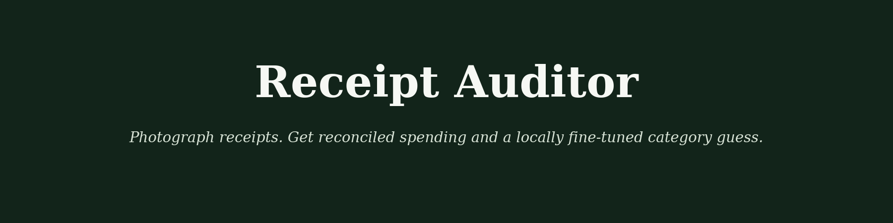

Local vision, reconciled, private by construction
Photograph a stack of receipts — get reconciled, categorized spending data with PII redaction built into the schema, plus a locally fine-tuned classifier that beats Claude's cold guess on spend categorization.
Ask a chatbot to tally your spending from receipt photos and you're trusting it to read every number right and report the sum honestly. Receipt Auditor never lets the model do arithmetic: totals are reconciled in plain code, spend answers are computed by pandas and only phrased by the model — with a guard that catches a dropped or altered number before it ships.
Local OCR (tesseract) + Claude reads each receipt — refuses non-receipt photos, flags low-confidence reads.
Computed total vs. printed total, checked in plain Python. Mismatches flag for human review, never a silent "fix."
Schema has no PII fields · raw OCR discarded · regex sweep · session-only on the Space.
A LoRA-tuned classifier categorizes spending — runs on a laptop, $0 marginal cost.
Every line item gets a spend category from a Qwen2.5-1.5B model, LoRA fine-tuned locally on 4,799 synthetic receipts across realistic POS merchant styles. Benchmarked against the untrained base model and Claude — all three given the identical blind prompt, no category list in-context:
| System | Top-1 acc | Macro-F1 | Cost |
|---|---|---|---|
| Base model (no fine-tune) | 27.7% | 0.333 | $0 |
| + LoRA fine-tune | 90.5% | 0.893 | $0 |
| Claude (teacher, zero-shot) | 56.0% | 0.506 | Max subscription |
claude -p call per receipt — no metered API, no vision API key. See the full writeup for the honest engineering story, including two real bugs found and fixed by the test suite.